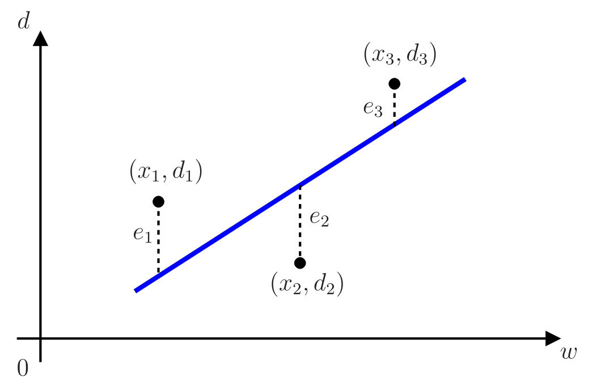
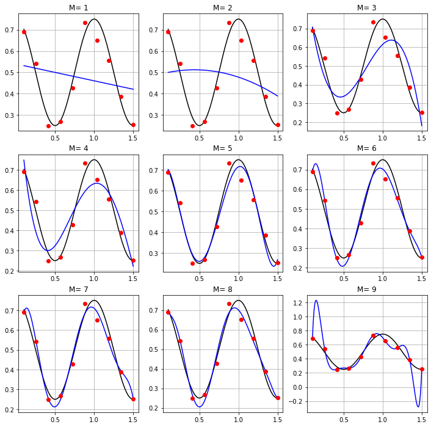

Regressão linear
Conteúdo
Regressão linear¶
Regressão linear univariada¶
Em engenharia, é muito comum buscar um modelo para dados experimentais previamente observados. Buscar um modelo adequado é útil para prever um valor a partir de dados não observados, se tratando de um problema de regressão. Um dos modelos mais simples é o ajuste de uma reta a dados conhecidos, o que leva à solução conhecida como regressão linear univariada.
Considere que
seja um conjunto de \(N\) pontos conhecidos previamente que podem ser fruto de um experimento. Vamos obter a melhor reta que se ajusta a esses pontos. Quando dizemos melhor, precisamos especificar em que sentido. Como, em geral, os pontos são experimentais, raramente se consegue obter uma reta que se ajuste exatamente aos pontos. Por isso, vamos buscar uma aproximação que melhor se ajusta aos dados, considerando o critério dos mínimos quadrados. Assim, deseja-se obter uma relação matemática do tipo
entre as variáveis \(x\) e \(d\), em que \(w\) e \(b\) são constantes que se deseja determinar. É comum chamar \(d\) de sinal desejado ou rótulo, \(x\) de entrada, \(w\) de peso e \(b\) de viés (ou bias).
Quando os pontos experimentais são colineares, a reta passa exatamente por todos os \(n\) pontos e as constantes desconhecidos \(w\) e \(b\) satisfazem
Podemos reescrever esse sistema de equações na forma matricial, ou seja,
Neste caso, como os pontos experimentais são colineares, vale \(\mathbf{d}-\mathbf{X}\mathbf{w}=\mathbf{0}\).
Caso os pontos não sejam colineares, o que acontece na maior parte dos casos, \(\mathbf{d}-\mathbf{X}\mathbf{w}\neq\mathbf{0}\). Dessa forma, para encontrar a reta que melhor se ajusta aos dados, vamos representar a diferença entre os dois vetores por meio do vetor de erros, ou seja,
Os elementos desse vetor de erros, \(e_i=d_i-b-wx_i\) para \(i=1,\cdots,n\), representam as distâncias verticais da reta \(d=wx+b\) aos pontos experimentais \((x_i,d_i)\), como ilustrado na Fig. 1, considerando \(n=3\).
{kind=link}

Fig. 1 Distância de um conjunto de pontos a uma determinada reta, considerando \(n=3\)¶
A melhor reta segundo o critério dos mínimos quadrados deve minimizar o quadrado da norma Euclidiana do vetor de erros, ou seja
Para minimizar essa norma quadrática, devemos derivá-la em relação às constantes \(w\) e \(b\) que se deseja determinar e igualar essas derivadas a zero. Assim, obtemos as seguintes derivadas:
que podem ser escritas de forma compacta como
em que \((\cdot)^{{\rm T}}\) representa a operação de transposição da matriz \(\mathbf{X}\). Igualando essa derivada ao vetor nulo, obtemos
ou ainda
Portanto, o vetor de coeficientes \(\mathbf{w}\) que satisfaz essa equação, denotado como \(\mathbf{w}^{\rm o}=[\,b^{\rm o}\;\;w^{\rm o}\,]^{{\rm T}}\), minimiza a norma quadrática do vetor de erros e \(d=w^{\rm o}x+b^{\rm o}\) é a melhor reta que se ajusta aos pontos experimentais segundo o critério dos mínimos quadrados.
Se \(\mathbf{X}^{{\rm T}}\mathbf{X}\) for invertível,
Essa equação expressa a unicidade da solução. Assim, se os pontos experimentais são não colineares, existe uma única reta que se ajusta a esses pontos segundo o critério dos mínimos quadrados.
Observações importantes:
O modelo \(d=w^{\rm o}x+b^{\rm o}\) é de fato linear apenas quando \(b^{\rm o}\neq 0\), pois neste caso \(x=0\) leva a \(d=0\). No entanto, o termo linear é frequentemente usado na literatura neste caso para se referir ao modelo dado por uma reta.
Os dados \(\{(x_1,d_1),(x_2,d_2),\cdots, (x_N,d_N)\}\) conhecidos previamente foram totalmente usados aqui para se obter o modelo da reta. Neste caso, eles podem ser chamados de dados de treinamento do modelo.
A matriz \((\mathbf{X}^{{\rm T}}\mathbf{X})^{-1}\mathbf{X}^{{\rm T}}\) é conhecida na literatura como a pseudoinversa de \(\mathbf{X}\).
Regressão linear multivariada¶
Suponha agora que os dados não sejam mais compostos por duplas do tipo \((x_i, d_i)\), mas por uma sequência de \(M\) valores de \(x\), seguida do valor de \(d\), ou seja,
Considerando que esses \(N\) conjuntos de dados sejam previamente conhecidos, deseja-se agora obter a melhor função linear segundo o critério dos mínimos quadrados, que se ajusta a esses dados. Trata-se de uma generalização do resultado anterior. Em vez de se obter a melhor reta, vamos encontrar o melhor hiperplano que se ajusta aos dados, levando à solução conhecida como regressão linear multivariada.
Assim, o modelo se torna
Considerando os \(N\) conjuntos de dados, obtemos o seguinte vetor de erros
Como no caso da reta, o melhor hiperplano que se ajusta aos dados segundo o critério dos mínimos quadrados é o que minimiza o quadrado da norma Euclidiana do vetor de erros, dada por
Generalizando os passos para obtenção da reta que se ajusta aos dados, chega-se a
em que \(\mathbf{w}^{\rm o}=[\,b^{\rm o}\;\;w_1^{\rm o}\;\;w_2^{\rm o}\;\;\cdots\;\;w_M^{\rm o}\,]^{\rm T}\) é o vetor que contém o viés e pesos ótimos que minimizam \(\|\mathbf{e}\|^2\).
Observações importantes:
Calcular a inversa da matriz \(\mathbf{X}^{\rm T}\mathbf{X}\) diretamente pode levar a problemas numéricos, dependendo do valor de \(M\). Isso ocorre, por exemplo, quando se utiliza a função
inv.mno Matlab. Algo semelhante também ocorre em Python e é pior ao se considerar precisão de 32 bits em ponto flutuante. Procure evitar isso, resolvendo o sistema linear\[ \mathbf{X}^{\rm T}\mathbf{X}\mathbf{w}^{\rm o}=\mathbf{X}^{\rm T}\mathbf{d} \]para encontrar \(\mathbf{w}^{\rm o}\). No Matlab, basta fazer \((\mathbf{X}^{\rm T}\mathbf{X})\backslash(\mathbf{X}^{\rm T}\mathbf{d})\). Em Python, pode-se, por exemplo, usar a função
np.linalg.solvedo NumPy.A matriz \(\mathbf{X}^{\rm T}\mathbf{X}\) é uma estimativa da matriz de autocorrelação dos dados de entrada \(x\).
O vetor \(\mathbf{X}^{\rm T}\mathbf{d}\) é uma estimativa da correlação cruzada entre os dados de entrada \(x\) e o sinal desejado \(d\).
Quando se deseja ajustar um polinômio de grau \(M\) aos dados
\[ \{(x_1,d_1),(x_2,d_2),\cdots, (x_N,d_N)\}, \]basta usar o resultado do caso multivariado, considerando
\[ \{(x_{1}, x_{1}^2, \cdots, x_{1}^M ,d_1), (x_{2}, x_{2}^2, \cdots, x_{2}^M ,d_2),\cdots, (x_{N}, x_{N}^2, \cdots, x_{N}^M ,d_N)\}. \]Isso leva à seguinte aproximação
\[ d=b+w_1x+w_2x^2+\cdots+w_Mx^M. \]Neste caso a matrix \(\mathbf{X}\) se torna
\[\begin{split}\mathbf{X}=\left[ \begin{array}{ccccc} 1 & x_{1} & x_{1}^2 & \cdots & x_{1}^M \\ 1 & x_{2} & x_{2}^2 & \cdots & x_{2}^M \\ \vdots & \vdots & \vdots & \ddots & \vdots \\ 1 & x_{N} & x_{N}^2 & \cdots & x_{N}^M \\ \end{array} \right]. \end{split}\]O resultado do item anterior pode ser usado para aproximar os dados não só por polinômios, mas também por outras funções. Por exemplo, poderíamos calcular as seguintes aproximações para os dados
\[ d=b+w_1\ln(x+5)+w_2\exp(x-2) \]ou
\[ d=b+w_1\cos(2\pi f_0 x)+w_2{\rm sen}(2\pi f_0 x) \]em que \(f_0\) é uma frequência pré-determinada. Um outro exemplo útil em Engenharia Elétrica é aproximar uma função \(f(t)\) periódica com período \(T_0=1/f_0\) por uma soma de senos e cossenos, ou seja,
\[\begin{split}{f}(t)\approx \;b&+w_{11}\cos(2\pi f_0 t)+ w_{12}{\rm sen}\,(2\pi f_0 t)\nonumber\\ &+w_{21}\cos(2\pi 2 f_0 t)+ w_{22}{\rm sen}\,(2\pi 2 f_0 t)\nonumber\\ &+\cdots\nonumber\\ &+w_{M1}\cos(2\pi f_0 M t)+ w_{M2}{\rm sen}\,(2\pi f_0 M t).\nonumber\end{split}\]Os coeficientes \(b, w_{11}, w_{12}, w_{21}, w_{22}, \cdots, w_{M1}, w_{M2}\) são conhecidos como coeficientes da série de Fourier e os dados usados para obter essa aproximação são obtidos a partir da amostragem da função \(f(t)\).
Overfitting¶
Um conceito que aparece de forma recorrente em redes neurais é o chamado overfitting. Apesar de nem termos falado em redes neurais ainda, é possível já introduzir esse conceito considerando regressão linear. Antes de falar de overfitting, precisamos fazer algumas considerações importantes.
Suponha que se deseja criar um modelo de regressão para prever o valor de venda de um automóvel usado. Dispomos de um banco de dados que contém várias informações sobre diferentes automóveis usados como ano de fabricação, modelo, estado de conservação, valor da tabela Fipe, valor médio de venda no mercado, etc. Utilizando esse banco de dados, podemos obter um modelo de regressão linear, que neste caso será multivariada, pois dispomos de muitas variáveis. Poderíamos usar todos os dados disponíveis para gerar o modelo. Se fizéssemos isso, como conseguiríamos avaliar se o modelo obtido é bom? Como saber se o modelo é capaz de prever adequadamente o valor de venda de um determinado carro que não aparece no banco de dados? Por isso, é importante reservar uma parte dos dados para avaliar a qualidade do modelo. Assim, é uma prática comum separar os dados de forma aleatória em dois conjuntos independentes e sem sobreposição: (1) conjunto de treinamento (ou aprendizado) e (2) conjunto de teste1. Os dados do conjunto de treinamento são efetivamente usados para gerar o modelo. Os dados do conjunto de teste são então usados para avaliar a qualidade do modelo gerado. Os dados usados para avaliação não devem aparecer no treinamento e vice-versa. Se o modelo se sair bem no teste, costuma-se dizer que ele tem uma boa capacidade de generalização.
Em qualquer problema de regressão, deseja-se que o modelo tenha uma boa capacidade de generalização. No exemplo do automóvel usado, é importante que o modelo consiga prever com o menor erro possível o valor de venda de um carro que não constava no banco de dados. No entanto, um modelo com muitos parâmetros pode ter um ótimo desempenho do treinamento, mas uma baixa capacidade de generalização, o que leva a um erro elevado na fase de teste. Isso é chamado de overfitting. Modelos com baixa capacidade de generalização não são desejáveis, uma vez que na prática serão apresentados a dados que não foram usados no treinamento e deveriam ser capazes de realizar uma predição ou classificação de maneira adequada. Diante isso, existem várias técnicas em aprendizado de máquina que foram propostas para evitar o overfitting. Por ora, vamos apenas entender melhor esse conceito com um exemplo.
Considere que dispomos de apenas dez valores igualmente espaçados de \(x\) no intervalo \([0,1;\;1,5]\). Os valores de \(d\) são gerados utilizando a função
em que \(v\) é um ruído branco gaussiano com média zero e desvio padrão 0,06. Assim, por exemplo, poderíamos ter o seguinte conjunto de treinamento
Como o valor de \(d\) depende do ruído, se não fixarmos uma semente, cada vez que gerarmos os dados teremos valores distintos. O objetivo é encontrar uma função (um modelo) polinomial de grau \(M\) que melhor se aproxima dos pontos do conjunto de treinamento, levando em conta a forma da cossenóide sem ruído. Na Fig. 2, são mostrados os pontos disponíveis no treinamento (em vermelho), as curvas pretas representam o sinal senoidal sem ruído e as azuis o polinômio obtido com a regressão. Foram considerados polinômios com graus \(M=1\) (reta), \(M=2\) (parábola) até \(M=9\). É possível ver que para \(M=1\) e \(M=2\) ocorre o underfitting, ou seja, as distâncias dos pontos de treinamento aos pontos gerados pelos polinômios dos modelos são elevadas, o que indica que eles não são adequados. A medida em que o valor do grau do polinômio aumenta, observa-se um melhor ajuste entre os pontos vermelhos e as curvas azuis, até o caso extremo de \(M=9\). Neste caso, o polinômio obtido passa exatamente em todos os pontos do treinamento, mas claramente a curva azul fica distante da cossenóide sem ruído em alguns trechos como pode ser visto pelas flutuações indesejadas. Isso indica que pode ter ocorrido overfitting devido ao número excessivo de parâmetros do modelo.

Fig. 2 Regressão linear polinomial; \(M\) representa o grau do polinômio, os pontos do conjunto de treinamento estão representados em vermelho; as curvas pretas representam o sinal senoidal sem ruído e as azuis o polinômio obtido com a regressão (código).¶
Para analisar o overfitting, geramos um conjunto de teste com 1401 valores de \(x\) igualmente espaçados no intervalo \([0,1;\;1,5]\) e calculamos o valor de \(d\). Como há ruído na geração de \(d\), os pontos gerados no teste foram diferente dos de treinamento. Para cada valor de \(M\), medimos o valor absoluto médio do erro de predição, levando em conta o conjunto de treinamento e de teste. Na Fig. 3, são mostrados os valores desses erros em função do grau do polinômio. Como esperado, o erro de aprendizagem (com os dados do treinamento) diminuem monotonicamente, chegando a zero para \(M=9\). Esse comportamento é típico sempre que o modelo ajustado varia do mais simples para o mais complexo. Em contrapartida, o erro do teste diminui até \(M=5\) e depois aumenta, indicando que modelos com muitos parâmetros têm baixas capacidades de generalização.

Fig. 3 Regressão linear polinomial; valor médio do módulo do erro de predição levando em conta o conjunto de treinamento e o conjunto de teste. (código).¶
- 1
Na realidade, é comum reservar também uma parte dos dados em um conjunto de validação, mas isso será abordado posteriormente. No momento, considere apenas os conjuntos de treinamento e teste.